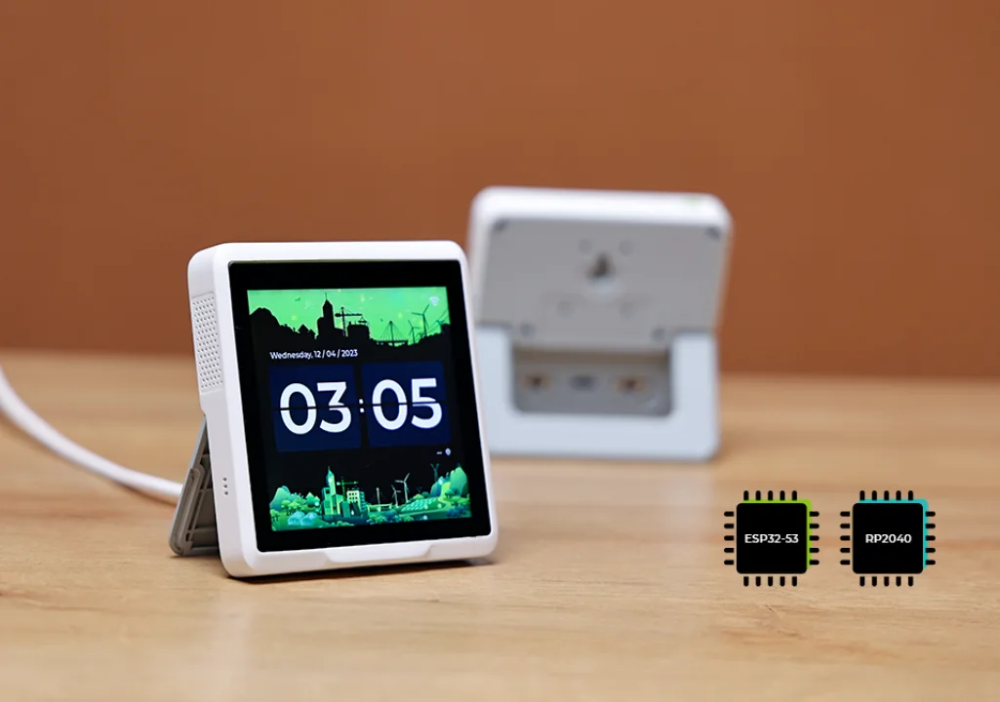

SenseCAP Indicator D1
Seeed Studio · Seeed SenseCAP Indicator D1 – 4" 480×480 ESP32-S3 + RP2040 touch panel
SenseCAP Indicator D1 is a 3.95" 480x480 Capacitive touch ESP32 display board by Seeed Studio based on the ESP32-S3 with 8MB (ESP32-S3) + 2MB (RP2040) flash.
Features, ports & interfaces
- RGB parallel display
- Capacitive touch (FT5x06)
- 8 MB flash
- microSD (TF) card slot – up to 32 GB, FAT32
- Wi-Fi 4 (802.11 b/g/n, 2.4 GHz) – version from the ESP32-S3 datasheet
- Bluetooth 5 (LE) – version from the ESP32-S3 datasheet
- USB-C
- I2C port
- Grove port: 2x Grove (ADC, I2C)
- Buzzer: MLT-8530 buzzer
- Lithium battery support
- Buttons: User button
Specifications
| Parameter | Value | Source |
|---|---|---|
| Screen size | 3.95" | source |
| Resolution | 480x480 | source |
| Display interface | RGB | source |
| Display driver | ST7701S | source |
| Touch | Capacitive | source |
| Touch controller | FT5x06 | source |
| MCU / SoC | ESP32-S3 (dual-core LX7, 240 MHz) + RP2040 co-MCU | source |
| MCU family | ESP32-S3 | source |
| CPU frequency | 240 MHz | source |
| Flash | 8MB (ESP32-S3) + 2MB (RP2040) | source |
| Wi-Fi | 802.11 b/g/n, 2.4 GHz | source |
| Bluetooth | Bluetooth 5.0 LE | source |
| USB | 2x USB Type-C | source |
| Category | Seeed Studio (SenseCAP / reTerminal) | |
| Buttons | User button | source |
| Buzzer | MLT-8530 buzzer | source |
| Grove / HY2.0 port | 2x Grove (ADC, I2C) | source |
| SD / TF | microSD up to 32 GB | source |
| Vendor | Seeed Studio |
Official links & documentation
Notes
- Display driver / touch IC / RGB bus are taken from the ESPHome device page (community), the wiki does not state them.